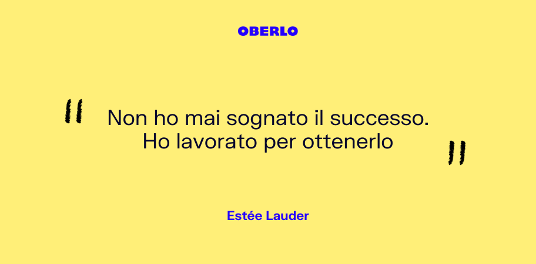
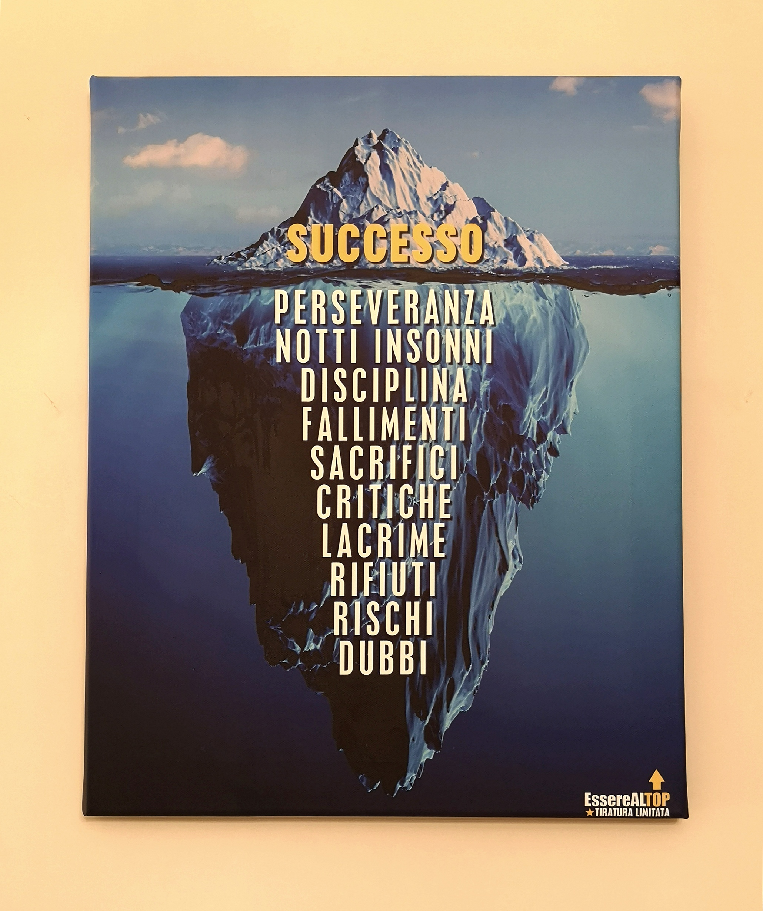

Sono Massimo Uzzolo, sono nato a Moncalieri ma risiedo attualmente a Candiolo, mi piace giocare ai videogiochi specialmente Minecraft e creare server, mi affascina comprendere come funzionano le truffe e giocare a scacchi
Ho sviluppato capacità informatiche programmando in Python, lingue straniere come inglese e francese e capacità matematiche
Sul breve termine punto a finire la scuola e diplomarmi. Dopo il diploma mi piacerebbe avviare qualche attività online attorno alle criptovalute
"Non ho mai sognato il successo. Ho lavorato per ottenerlo"
- Estèe Lauder

